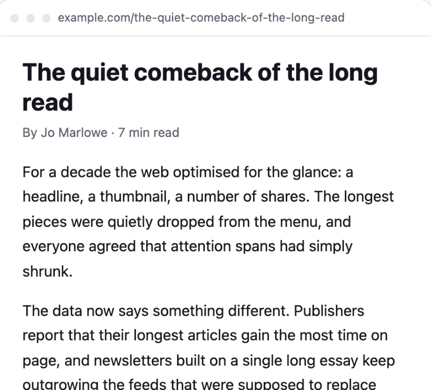
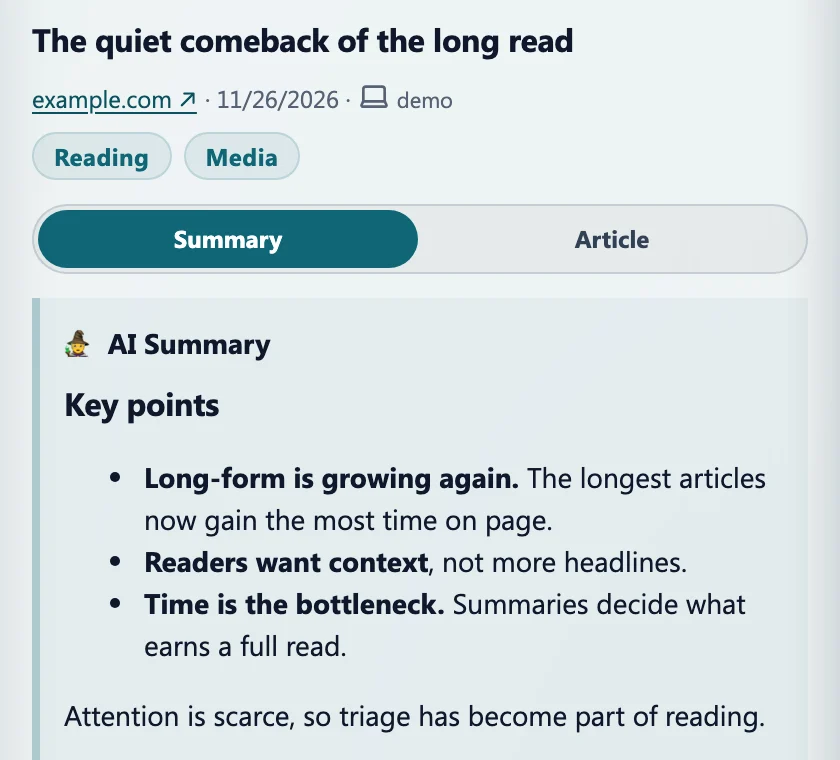
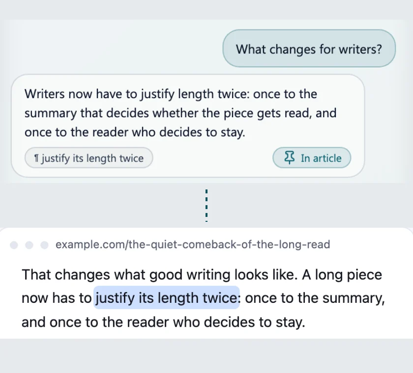
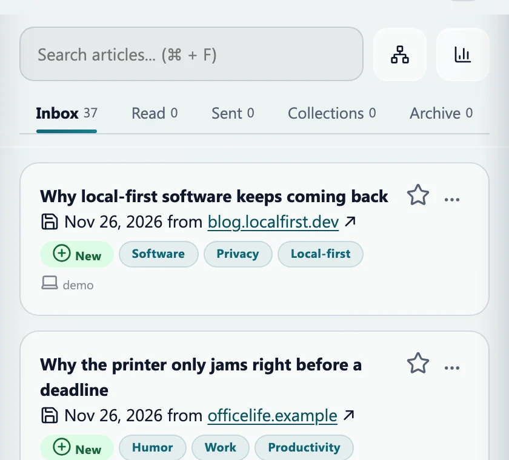
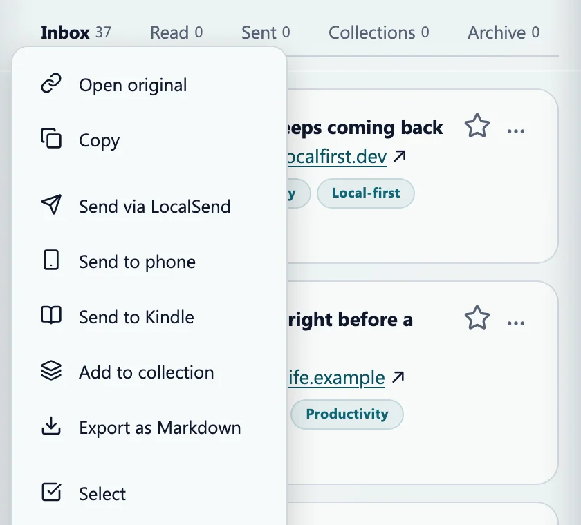

Go to the source.
Take it with you.
Summaries and answers that point back to the passage, saved on your own device.
Extensions run on a computer. Email me the link · Copy it
139 upvotes on Product Hunt · Open source · No account · Made in the EU





- 1 / 5
Read any page
Open an article, a PDF or a video page as usual. AI Summary Helper waits in your browser.
- 2 / 5
Get the short version
One click, and the key points appear beside the article, in the language you choose.
- 3 / 5
Ask, then check
Every answer points to the passage it came from, so you can read it yourself.
- 4 / 5
Keep what matters
Saved articles, highlights and notes stay on your device, with search, tags and a knowledge graph.
- 5 / 5
Take it with you
Send it to your Kindle or phone, or export it as Markdown.
Watch the two-minute tour →
You save more than you will ever read.
Tap Digest. It picks a varied five from your saves and sends them to your Kindle or e-reader for the evening.
How Digest works →Yours, all the way down
Your AI
Bring your own key, or run a local model with Ollama.
Your device
The library, search and knowledge graph stay in your browser.
Your storage
Encrypted sync to your Nextcloud, S3 or a folder.
And when you need more
Summaries with your choice of model
OpenAI, Gemini, Mistral, DeepSeek, a custom endpoint, or local Ollama for summaries that never need to leave your device.
PDFs and YouTube videos
Summarize browser PDFs and videos from their captions, and ask follow-up questions with source citations.
A built-in RSS reader
Follow blogs and news sites, filter by source, tag, date or mood, import OPML and summarize any item in one click.
Research mode
Papers are recognised by their DOI, with study design, sample, limitations and a citation from the DOI registry.
Highlights, notes and comments
Highlight text on any page, comment on it, and find your notes again by article or tag.
Export and your AI apps
Export to Obsidian, Markdown, Word or PDF, or let Claude, LM Studio and Cursor search your library when you allow it.
Choose your path
Research & PDFs
without losing the source
Explore research mode →
For video learnersTurn long videos into
knowledge you can use
Explore video reading →
For personal news researchCurate your own
current events
Explore local RSS →
For e-reader readersArchive it once,
read it on your Kindle
Explore the e-reader workflow →
For privacy-first readersYour reading stays
yours
See the local workflow →
For connected AI workflowsConnect your
knowledge
Explore MCP →
Send links from your phone to your computer
The companion app adds AI Summary Helper to your share sheet. Links travel end-to-end encrypted and wait in your browser. There is no iPhone app yet.
Download for Android (APK)Support the project. Get effortless AI.
Everything works for free with your own AI key or a local model. The Support Pass funds independent, local-first software and adds effortless AI plus unlimited offline reading—without holding your archive hostage.
- Unlimited summaries with your own AI key or Ollama
- Search, digest, knowledge graph — all on-device
- Encrypted sync and backup to your own Nextcloud, S3 or folder
- 3 Kindle sends included
- byphil Cloud: many AI models, no API key needed
- Unlimited Kindle & LocalSend sends, including digests
- Supports independent, open-source development
Prefer to pay once? A one-time donation of €50 gives you 12 months of full access, everything in the Support Pass. Donate & unlock
Before you install
Do I need an account to use it?
No. Install it, bring your own AI provider key or use a local Ollama model, and start saving. An account is only needed for optional byphil Cloud access or extra Kindle/LocalSend sends. See the provider options →
What actually leaves my browser?
Only the summarization request goes to the AI provider you configured. RSS also needs requests to your subscribed feeds; an AI recap sends headlines and short snippets only when you request it. Search, duplicate detection, tags and recommendations run locally. See the on-device architecture →
Are my pages or highlights used to train a model?
AI Summary Helper does not use your content to train its own model. With BYOK, the data policy of your chosen provider applies. With Ollama, the summarization request stays on your machine. Read the privacy model →
Can I run this with zero cloud dependency?
Yes. Point it at a local Ollama model and the summarization step stays on your machine too. Everything else already runs locally. Compare BYOK and Ollama →
Where is my reading archive stored?
By default, in your browser on your device. You can export it as Markdown or back it up encrypted to your own Nextcloud, WebDAV server, S3 bucket or local folder. Read the sync guide →
Notes on reading and trust
Check an AI summary against its source
A quick way to check any answer against the page it came from, and what a quote can and cannot prove.
Read the post → GuideLooking for a Pocket alternative? Here's what actually matters
Pocket's shutdown left a real gap. A decision guide based on what you actually used it for.
Read the post →